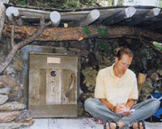
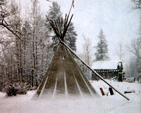
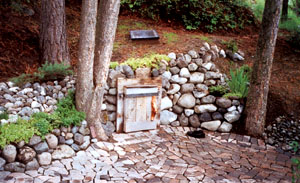
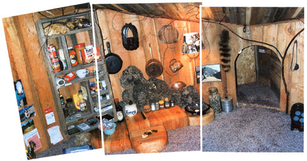

Living Free
December/January 2002
Homesteading
by Dan Price
I once lived in a log cabin with a window that framed the ski runs above Sun Valley, Idaho. Off from work one day, some friends and I explored a remote canyon road in an old Chevy. After bouncing along for an hour we came to a dead end. There, sitting in a grove of Aspen trees was the most beautiful sight I'd ever seen: A towering white-canvas tipi, sitting like Buddha-simple and utterly perfect.
No one seemed to be around so we nervously rolled back the door flap and peeked inside. There in the nestlike dwelling was a mattress covered with thick down sleeping bags, an old trunk with clothes spilling out and a shelf lined with rice, crackers, bottled water and some French bread. In the center, surrounded by blackened pots, there was a still-warm rock fireplace. We thought we had a glimpse inside heaven.
All the way back to town we discussed the purity of living in such a fashion and how with some common sense and a little hard work, we could achieve that kind of purity for ourselves.
I've noticed that most people's homes are high-maintenance money drains. Every day people have to leave their homes to go to work so they can pay off their mortgage. I wanted the chance to build a simple, affordable home in which I could spend my time, rather than all my money.
It was easy for us rowdy young carpenters to dream and make grand statements about living free. But before long, responsibilities to parents and girlfriends, then wives, children and bosses, made our dreams seem childish and unrealistic. Like generations before us, we obediently marched onward.
But somewhere in a corner of my mind, the dream persisted. Ten years later I saw a bright white beacon: a tipi high on a lonely hill just outside an eastern Oregon town. That image, of the tipi set against the blue summer sky, whispered to me whenever big decisions pushed me further into the dark, sticky goo I called conventionality.
EDITING THE EXCESS
For the next 10 years I traveled as a news photographer. I discovered that the best pictures were made by carefully editing out all extraneous things from the viewfinder. That process expanded and I found myself editing all aspects of my personal life. No longer content to gobble up the world as it presented itself, I wanted to rethink how I was living my life. My old dream surfaced.
My wife and I had amassed several bulging notebooks of photos, sketches and ideas about simple living. But our lifestyle desires differed and we opted to go our separate ways. I finally followed through with my dream of a simple home once I arrived back in eastern Oregon in the summer of 1990.
Convinced that the American Indian tipi is the best structure ever conceived by humans, I began to collect information on them. After months of searching every weed patch, pasture and hobo hill I could find, I walked onto an extraordinary two acres that fronted a river, was four blocks from town and just six miles from the community where the kids lived with their mom. Getting permission to place a tipi on the land did net turn out to be as hard as I imagined.
I had a newspaper clipping that told the story of a mortgage-hating fellow in Kentucky who paid a farmer X100 a year for the privilege of building a tiny house on a remote part of the farmland.
Armed with this novel idea, I shakily knocked on the door of the two acres' owners and made my pitch. Much to my amazement, their answer was yes. I would become the land's caretaker, cleaning up all the downed wood, repairing fences and paying the owners $100 a year to erect a tipi and live there.
SITTING LIKE BUDDHA
The meadow, later christened Indian River Ranch, has been the setting for an amazing journey. Not only did I get to experience living in a tipi like the one I fell in love with back in Sun Valley, I also have had land on which to pursue my vision for the perfect, simple dwelling. I dug out a mucky area and two ponds miraculously appeared. I built an outhouse and covered it with handmade shingles. A friend sold me a 14-foot tipi cover and I drove my old Ford Falcon into the woods to gather skinny poles.
That first winter, I kept my little $85-a-month flophouse room in town. Most days and some weekends were spent in the meadow; I used the hotel room for sleeping and working on a magazine enterprise.
By the next year, the dream had grown and I purchased a new, sturdier and larger tipi, complete with wooden floor and insulating liner. To the disbelief of my friends and family I let the hotel room go and moved into the tipi full time. I did bury an electrical line to the tipi to run mycopier and heater-simplicity doesn't have to be completely Spartan.
I also built an American Indian-style sweat lodge near the river from thin willows and heavy burlap.
The kids and their mother came to spend the summer months fishing, hiking and having cookouts. Friends visited for dinners on the ever-expanding lawn. When fall arrived I buttoned up and insulated. Winter was interesting-a good time to stay inside, write lots of letters, read books and clean accumulated snow off the sides of my little home. I distinctly remember the 20-below-zero days when I'd run out to the river, chop a hole in the ice, drop in a bucket for water and sprint back to the warm tipi with frost-nipped fingers.
The tipi days were truly wonderful and lasted for three years. I could hear, and literally feel, the weather just outside that thin canvas. I kept an extensive journal, like Henry David Thoreau's.
BUGGED TO BUILD
In the fall of 1994, I got the building bug. I decided I'd been way too heavy-handed in the meadow. It had become more like a Japanese garden than the wild vagabond hangout I had envisioned. My new vision was a small, low-slung but with round windows and a snug interior buried in the tall grass of an untended meadow, a 9x12foot red-willow dome, carpeted and cozy. I had a simple propane burner, clothes in a duffel bag and a bed that rolled up to become a couch. From the inside it looked like a large, decorated basket, from the outside like an African hut.
Other than the occasional intruder when I was gone (there was no way to lock the blanket door), the but proved to be the most comfortable structure I have lived in. Spending time in that serene space provides some of my greatest memories. The moonlight came through the round window and I watched it move across the floor. Life was very simple then, I spent great amounts of time just being.
HAVE TENT WILL TRAVEL
After two years in this reverie, Simple, a shoe company, hired me to wander and draw. They continued publishing my illustrated travel diary, Moonlight Chronicles, for the next four years.
But what of my dream of simple living? I had been testing commercial tents and thought that it might be possible to live in an expedition tent full time. I could set it up in the meadow when I was home, then roll it up and take my house with me on the road. So the but was dismantled (much to the disappointment of my family), and the tent took its place. Once again I felt the excitement of being one notch freer than before.
Back home, I would quickly raise the tent and settle in. I studied the lives of nomads, hobos and Buddhist monks and pondered the next step of my dream. In the meantime, though, other forces exerted themselves. I had become a businessman and was in need of a phone and lockable space to store camera equipment and the ever-growing pile of my magazine. I also knew that I would need to promote myself if I was going to be able to maintain this unusual lifestyle beyond the shoe company deal.
Browsing through a bookstore, I saw a book called Tiny Houses. (See MOTHER'S Bookshelf, Page 88, to order.) Inspired, I decided to build a small beach shack. At home, I gathered free materials wherever I could find them: planks from an old dock, a picnic table, some weathered tipi poles and piles of unwanted boards from various dumps. The building was only 6x10-feet with one window and a thick, yurt-style door to the south. Total cost was $95. It was small but it allowed me to lock up my growing number of possessions and be gone for months without a care. Or so I thought.
Within a year, the restless builder in me whispered, "You know, you're almost 40 now. Don't you think you deserve a bigger and more comfortable place?"
So I built. First a 6x5-foot addition that served as a bedroom and kitchen area. Then an ambitious 8-foot-round dwelling built directly into the hillside and connected via a short passageway to the studio. I constructed two cold frames for growing lettuce and carrots. I wired a large black bucket with a 110-volt heating unit and put it on top of a small closet, creating a shower. I had a beautiful lawn that required the attention of seasonal fertilizers and weekly mowings. One clay, I sat back on the hillside, looked over this supposed Eden, and wondered, once again, where in the world my dream of simplicity had gone.
A few days later I arrived to discover the massive door torn from its hinges and $5,000 worth of cameras, computers and camping gear stolen. The thieves were kind enough to leave my journals and artwork untouched. I called the sheriff, sat back on the porch and, between whimpers, hatched another plan.
THE HOBBIT HOME
Two days later-much to the dismay of friends and loved ones-I once again began to dismantle. A bonfire raged for eight days as I took apart and burned the walls, roof and flooring of the recent additions. "What in the hell do you think you're doing?" I asked myself. But I could feel a spot in my heart say, "Go on, the answers will come."
By the eighth day the flat spot under the trees was clear once again. A small passage protruded out of the hillside and the dugout's skylight glinted in the sun. An idea struck. Why not just move into the dugout? Enthused with this new realization, I happily rebuilt the new doorway and the adjoining retaining wall, and relaid the cobblestone patio that originally served as the walkway to the outhouse. To deter future bandits, I welded a strong metal framework for the skylight that bolts from the inside and made a wide steel strap that solidly locks the door.
The 8-foot-diameter dugout holds thickly padded carpeting, a roll-up couch/bed and a few shelves. Best of all, it has tons of peace and quiet, accented by the open skylight.
Because the dugout is entirely underground it is a cinch to heat. A small, ceramic heater keeps it warm just staying on idle. On hot summer days the space stays much cooler than the outside air, compliments again of the ground's mass. Thirty years ago I read The Hobbit and was intrigued enough with Bilbo Baggins' underground home to dig a big hole in the woods and throw a piece of plywood on for a roof. But when I crawled inside it was just a dirty, musty hole. Today I can lie back and laugh at those early attempts.
And yes, it's true, the builder in me still lies awake some nights thinking of ways to improve on it all.
 Under his home's new overhand, Dan Price writes and draws, a passion his simple lifestyle affords him time to pursue. |
 Winter was interesting: Dan's first tipi during a snowstorm. |
 Home sweet home: An early version of the hobbitlike dwelling. |
|
 The cozy interior of Dan's hobbit house. |
 |
|